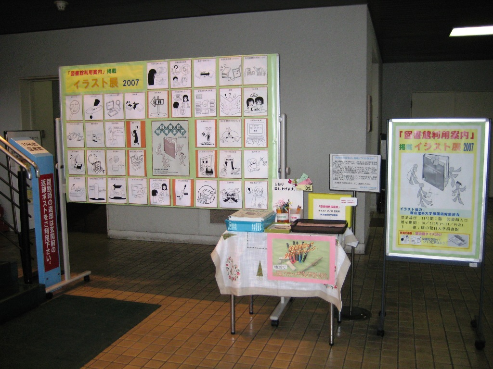

今回展示したイラストは、全部で３８点でした。
このイラストは、「図書館利用案内2007年度」のために、本学の漫画研究愛好会のみなさんが提供して下さった作品です。
「図書館利用案内2007年度」には掲載できなかったものもありますが、今年も昨年と同様、漫画研究愛好会に感謝の意を込めて未掲載のイラストも含め展示させていただきました。
漫画研究愛好会のみなさんには、図書館にご協力いただきましたことを感謝いたします。

イラスト展全景
クローズアップ
<<
more
>>